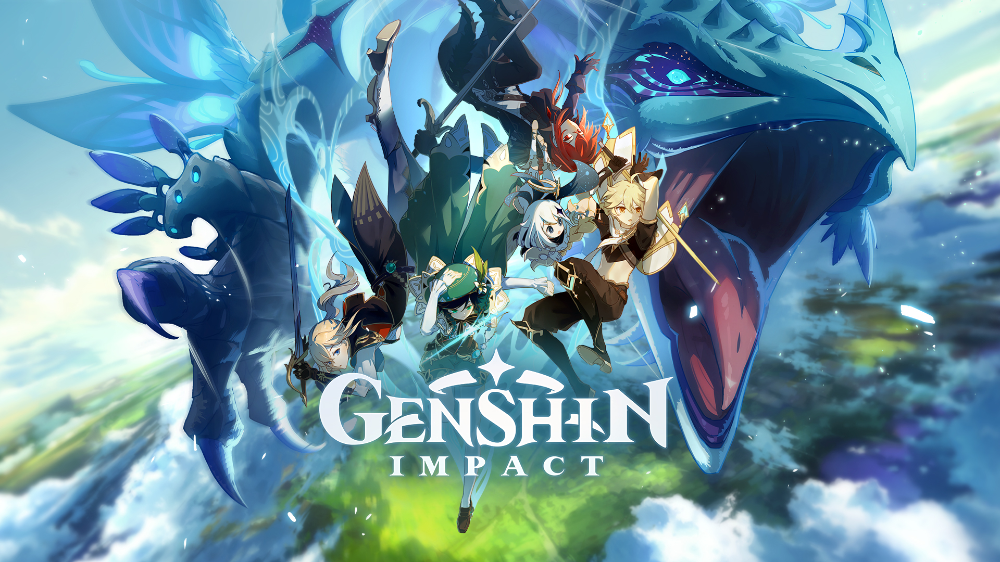

- Undertale
- Stardew Valley
- Genshin Impact 
- Skyrim
- Monster Hunter Rise

Undertale é um RPG que usa uma perspectiva de cima para baixo. Nele, o jogador controla uma criança e completa objetivos para progredir na história. Ele explora um mundo subterrâneo repleto de cidades e cavernas, e é obrigado a resolver vários quebra-cabeças em sua jornada.

Você herdou a antiga fazenda do seu avô, em Stardew Valley. Com ferramentas de segunda-mão e algumas moedas, você parte para dar início a sua nova vida. Será que você vai aprender a viver da terra, a transformar esse matagal em um próspero lar? Crie a fazenda dos seus sonhos!
Trata-se de um novo RPG de ação e mundo aberto, no qual a exploração é livre e oferece um mapa enorme e várias missões e desafios ao jogador.

Os jogadores assumem o papel de heróis envolvidos em missões épicas, trabalhando juntos para derrotar seus inimigos e explorando a vasta extensão de Skyrim.

Experimente a ação de caçar sem barreiras em locais abertos e contínuos! Atravesse os mapas de forma inédita com novas ferramentas de mobilidade e exploração. Monstros totalmente novos trazem fortes emoções!